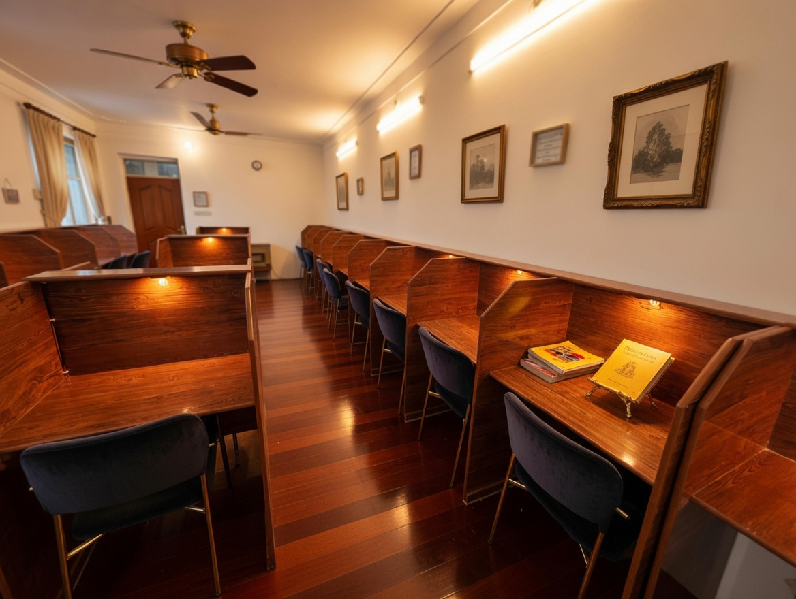
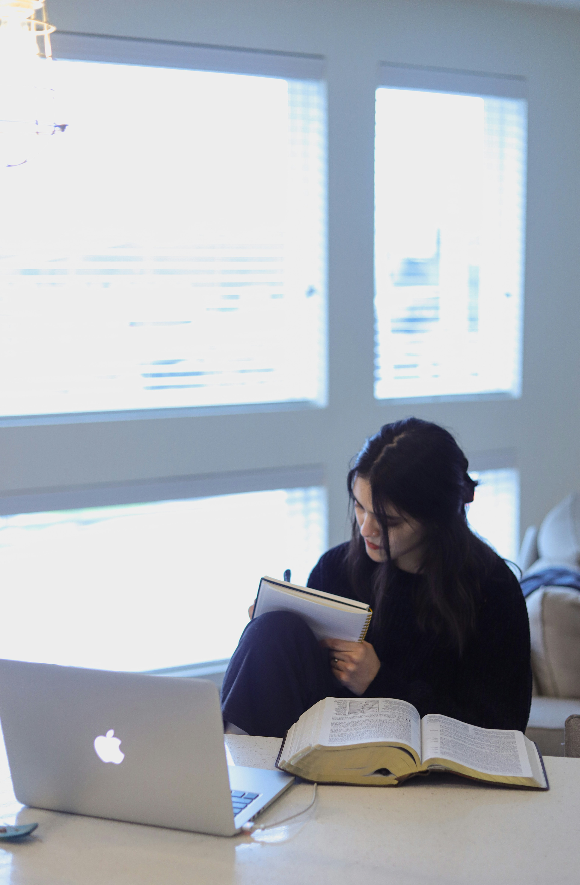
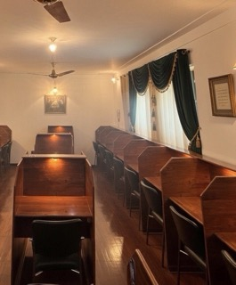

The Elysian Library is a calm and secure study environment designed exclusively for female university, college, and medical entrance exam students in Quetta.
Limited Seats • Quiet Environment • Female Only
Located near Hazara Town Road Brewery in Quetta, The Elysian Library provides a quiet and focused atmosphere for serious students.
Calm and distraction-free atmosphere for focused learning.
Individual desks with dedicated lighting and power switches.
Reliable internet connection for research and online learning.
Continuous electricity to ensure uninterrupted study sessions.
A dedicated quiet space for prayer and reflection.
Open air space where students can relax during study breaks.



"Best place in Quetta for peaceful study."
— Medical Student"Very calm and comfortable environment."
— University Student📞 Phone / WhatsApp: +92 326 3488608
📧 Email: elysianlibrary02@email.com